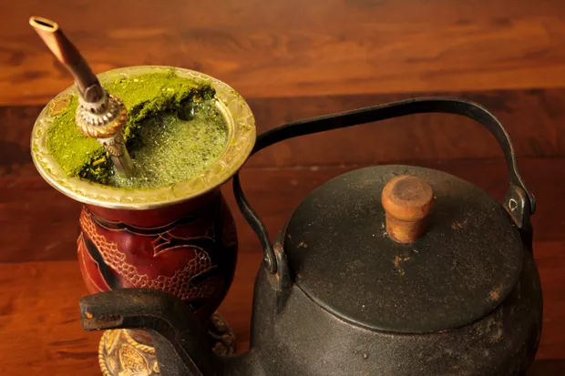

Chimarrão

Description
Chimarrão is a traditional and popular drink in South American culture, especially in southern Brazil, Argentina, Uruguay and Paraguay.
Made with yerba mate, chimarrão is appreciated for its unique flavor and stimulating properties, and is a comforting
and social drink that is shared in chimarrão circles, promoting moments of conviviality and friendship.
Ingredients
- 2/3 of a mate gourd
- water
Steps
- Fill two thirds of a cuia (the vessel in which chimarrão is drunk) with mate.
- Then, make a small mound on one side of the gourd and pour warm or hot water up to the brim.
- Wait 5 minutes before drinking to give the herb time to swell.
- The first sip should be spit out as it always comes with a little bit of mate powder.
- If you want to repeat, you don't need to add more mate, just fill the gourd with water again.